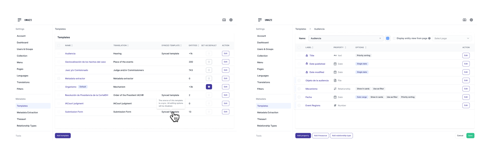
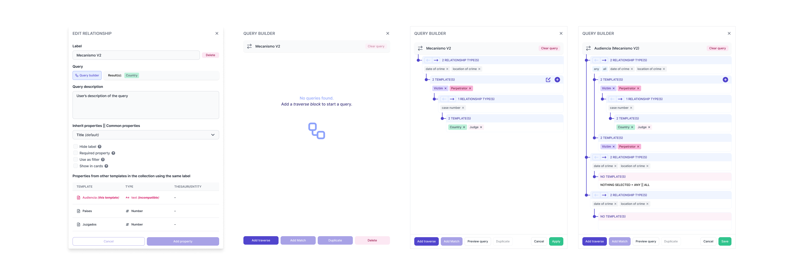
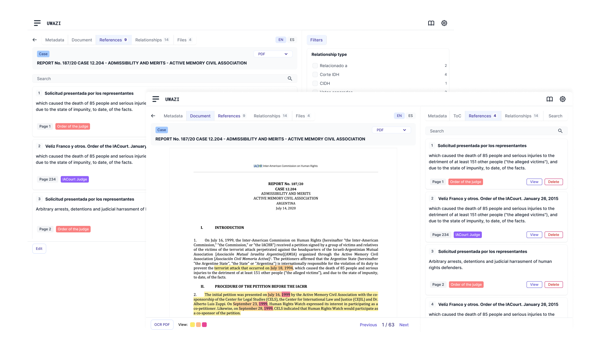

Uwazi: Interface Modernization & System Consistency
Led a comprehensive redesign of a complex human rights documentation platform, transforming inconsistent features and fragmented user flows into a cohesive, modern interface. Established design patterns, improved navigation architecture, and implemented user-friendly interactions across dozens of features, resulting in a unified experience that made complex data management accessible to human rights organizations worldwide.
Role
Lead UX/UI Designer
Team
CTO, 8 Engineers
Timeline
18 months
Tools
Figma, Miro
The Challenge
A powerful human rights platform had evolved organically over years, resulting in inconsistent user interfaces, conflicting interaction patterns, and fragmented workflows that hindered user adoption and efficiency across different features.

Mapping the extensive features and screens of Uwazi.
My Process & Research
This redesign didn't come out of the blue, after many months of fixing details and improving interactions, the team decided it was time for a complete remake of the interface. After some brainstorming sessions, we agreed that the best approach was to start from scratch the UI, with incremental implementation, and build a new design system that would unify the user experience across the platform.
I initiated the project by conducting a comprehensive audit of the existing interface, identifying inconsistencies in design patterns, interaction flows, and user feedback. Concurrently, I analyzed what other databases and documentation systems were doing to identify best practices.
- User Interviews: Uncovered expectations vs. reality.
- Competitor Analysis: Studied best-in-class usability patterns.
- Journey Mapping: Visualized all of the frustrating user paths.
- Persona Development: Identified core user types and their needs.

Key insights from audit, research and user interviews.

We didn't have a proper handover form the previous designer, so I recreated of all the implemented UI screens, features, and states, in Figma.

Summary of the audit findings with key pain points.
Ideation & Design
Based manly on research and best practices, I led a series of sessions to generate alignment and agreements with the team. We focused on simplifying as much as possible the steps to take, breaking down complex workflows into clear, actionable stages. This allowed us to progress with confidence, reducing cognitive load and minimizing errors.
Key design decisions and constraints included:
- Translate the current features 1:1 while hunting as many bugs as possible.
- Improve the interaction between key worklfows.
- Unify and reuse components.
- Generate a design system that would allow us to scale the UI and add features without breaking the consistency.
Implementation of the previous filters UI.

High-fidelity mockups of a new table based UI with spacing handover markers - desktop & mobile.
Implementation screens of the old PDF UI.
High-fidelity mockups of a new PDF UI with a more modern interface and contextual navigation.
High-fidelity mockups of the new Template list and template edit UI.

Side by side comparison of the old imlementation and new components for relationships UI.
Conceptual mockup of the new relationship v2 property and its query builder UI.

Up-down comparison of the old implementation and new screens of the translations UI.
Additive Text References UI mockup, allowing users to highlight overlapping pieces of text, and link documents and other resources directly within those field selections.
Testing & Iteration
We conducted unmoderated usability tests with 15 participants using a clickable Figma prototype. Key findings led to iterative improvements, such as refining microcopy and adjusting the placement of critical information.
Clickable prototype used for usability testing.
The Solution & Impact
The new onboarding flow significantly improved user activation. We observed a 25% increase in successful account setups within the first month post-launch, exceeding our initial goal. Qualitative feedback indicated users found the process much more intuitive and less intimidating.

The final redesigned onboarding flow.
Learnings & Next Steps
This project reinforced the importance of continuous user feedback. We learned that even small changes in microcopy can have a significant impact on user understanding. Future iterations would involve A/B testing different call-to-action button styles.